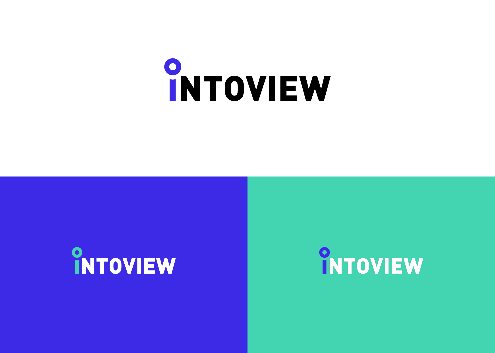
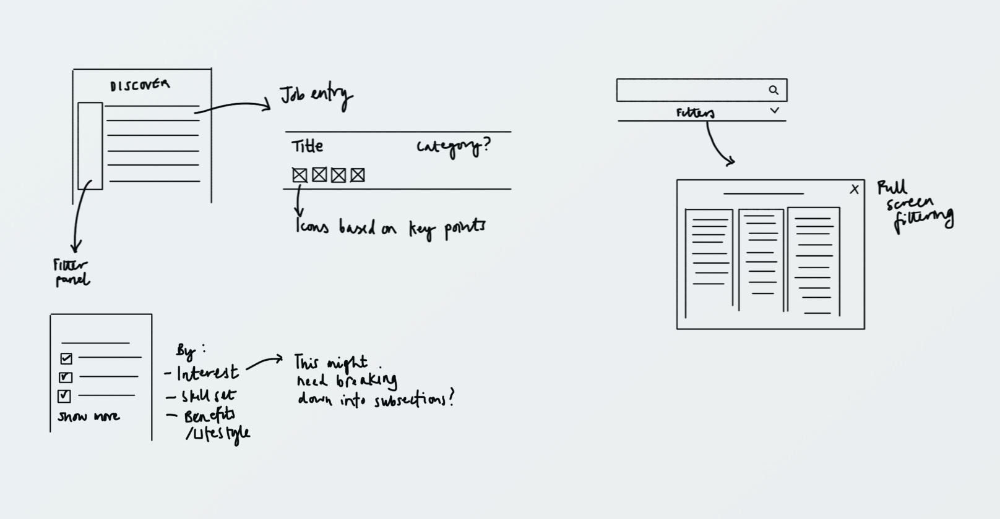
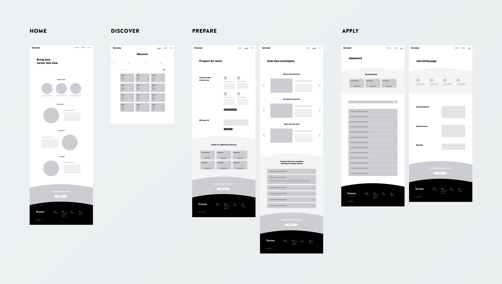
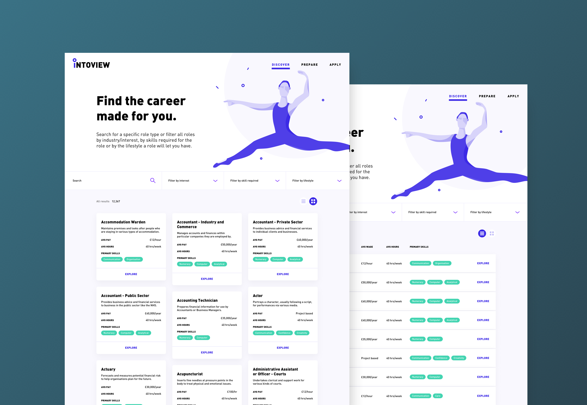
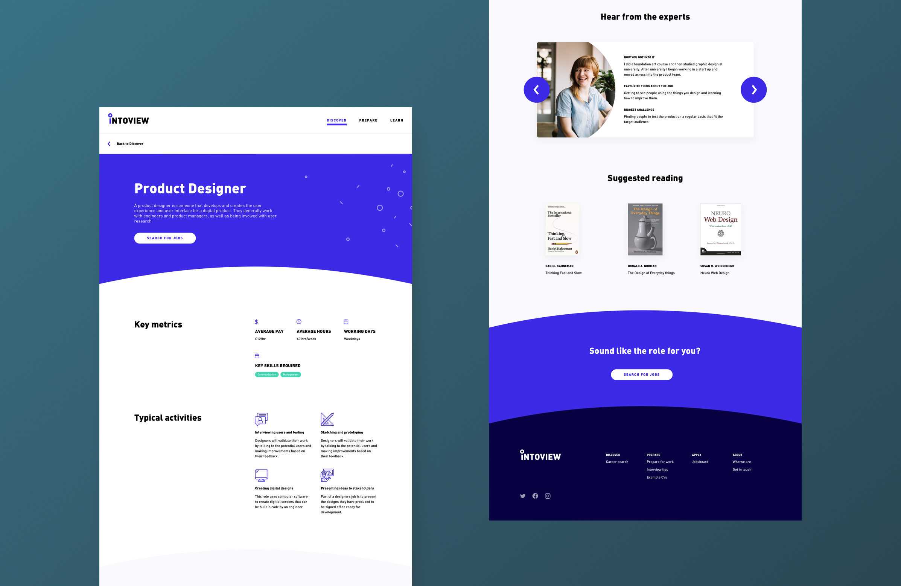

Product Design
INTOVIEW
When you ask a young person what they want to be when they grow up, what do they say? Professional athlete, teachers, vets would all be high on the list. But what about prop designers, speech pathologists or ethical hackers? In school and college you have to make choices to prepare yourself for the world of work, but you often don't have any idea of all the options available to you. Even when you're in the world of work it can be hard to discover the more unusual careers.
Intoview is a self initiated project trying to tackle this education gap: allowing people at different stages of their professional life to discover the career that makes them want to spring out of bed in the morning.
This is a work in progress and is by no means a complete project, but below is a taste of the journey so far.
WHAT
UX design
UI design
Personas
Branding
Illustration
WHO IS IT FOR?
There were a few categories of people that stood out as benefitting from a project like this: people in school or higher education who would be looking to see how their current and future studying can be taken forward, and those outside of education who may be looking to change career.
From these groups I drew up a series of personas to work with. Each of these personas have a different granularity of search, some knowing what field they want to be in, others only knowing fields they don't want to be in. My goal with this project was and is to make something that helps these people discover new possibilities so that no one is left without something they're passionate about.
SUSAN, 18,
STUDENT, DERBY
Susan is just starting out her professional life. She already has a job on the side of school but that's just to bring in some extra cash. She is starting to look at what she might want to do after school.
HARRY, 25,
ACCOUNTANT, LONDON
Harry has always been good at maths. He likes the logical thinking behind it. When he finished school he did a degree in Maths because it seemed like the obvious thing to do. He ended up getting a job at an accounting firm but it's not something that he really cares about. This issue is he doesn't know what else he can do.
NANCY, 15,
STUDENT, MANCHESTER
Nancy hates school. She really struggles with conventional classes and doesn't feel engaged with any of her subjects. She knows she's good at fixing things when they break but doesn't think this is something she could do as a career in the future.
FLORENCE, 36,
ON MATERNITY LEAVE, BRISTOL
Florence is currently on maternity leave with her second child. She's been in HR for 10 years but wants to pursue her passion for florestry. With two young children she wants to find out how she can pursue this passion while still being able to support her family financially and emotionally.
SCOPING OF SOLUTIONS
From the personas I was able to work out the scope of the project, and through some 'How Might We' statements, give myself some clear targets. It became clear early on that I wanted to focus on job discovery as well as content that would prepare, inspire and enable people to get closer to their dream role and lifestyle. I explored these areas, looking at all the content Intoview could offer to meet these criteria.

How might we statements

Exploring Discover, Prepare, Inspire and Enable
BRANDING
Part of the project involved coming up with a brand identity. I settled on the name Intoview. This was based on bringing a career into your view, as well as playing on the interview processes for getting your dream job.

Logo exploration

Final logo and colour variations
INTERFACE DESIGN
I began the design stage thinking about how people would narrow down a search in a case where they didn't know quite what they were looking for. I identified a series of categories that you could explore roles by: Industry/Interest, Skill, Lifestyle e.g. hours or pay.
But as we know, some of these things overlap. I might want to search for a creative job that pays well, or a role in finance that gives me flexible hours. It was then that I settled on the idea of having a repository of all the jobs on the site, that you filter down based on skill, lifestyle or interest, allowing you to combine as many criteria as you want.

Part way through the design process so far I had a rethink about what Intoview was trying to achieve. I'd been working on the plan of having course and apprenticeship listings as well as jobs, and so was attempting to roll a job site and a further education site all in one. As a result it felt like the initial purpose of the site became muddied, making it more complicated for someone to navigate. I reconfigured it so that it focused solely on the jobs and tips on how to get into the roles.
With a more focused site map I have been able to sketch and produce wireframes for the pages, which I'm currently in the process of building out.

Wireframes for core pages

Discover section with card and list views

Job detail page - part of the discover section
This project has been, and continues to be, a really rewarding experience. I've been able to go through the full process of problem identification and scoping, as well as developing new skills such as illustrating people which I'd always been terrible at previously!